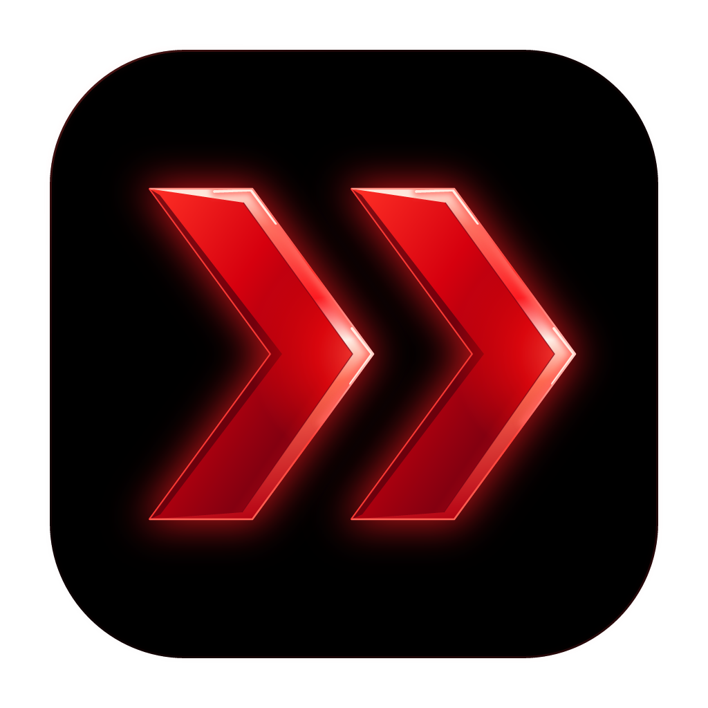
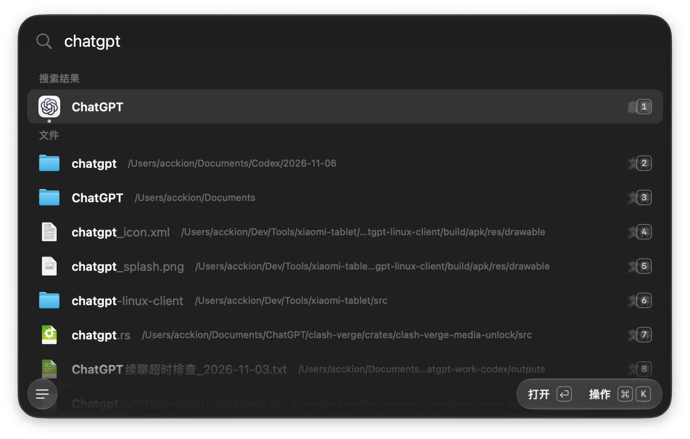

Your apps. Within reach.
Search by name, Pinyin or fuzzy matching. Keep favorites close and launch from the keyboard.

KeylaneBUILT FOR macOS
Apps, files, clipboard, everyday tools.
One native search window. Stay on your keyboard.
macOS 26+ · Apple Silicon

ONE PLACE. EVERY DAY.
Press Option + Space. Get straight to what you want to do.
Search by name, Pinyin or fuzzy matching. Keep favorites close and launch from the keyboard.
Calculations, dictionaries, Emoji, window actions and system settings. All from one place.
Quicklinks, snippets, Apple Shortcuts and scripts. Make them yours with aliases and hotkeys.
FIND YOUR FILES
Filter by type and preview contents and details. Search your authorized folders with Spotlight and local indexing, without opening window after window.

KEEP YOUR CONTEXT
Text, images and files. Search, preview, pin, then paste into the app you are using. You choose retention and whether history stays between sessions.

KEEP YOUR WORKFLOW
Import .rayconfig or Quicklinks JSON to bring supported preferences, aliases, hotkeys and Quicklinks to Keylane. Preview changes and conflicts before choosing what to import.
Available in current source builds; not yet included in the public installer.
Read the migration guide ↗Export your Raycast configuration
Settings → Advanced → Migrate from Raycast
Review, confirm, then quit and reopen
NATIVE BY DESIGN
Swift, SwiftUI and AppKit power the main interface directly, with no WebView hosting the launcher. A native foundation for the things you do all day.
Keylane
Completely free, with no subscription or paid tiers. GPL-3.0-or-later source you can inspect, modify and build.
GPL-3.0-or-later ↗Raycast 2
Free core features; subscriptions for premium features. Raycast 2 combines a native host with a web UI.
Explore the architecture ↗ · View product ↗SuperCmd V2
Native Swift UI, with a one-time purchase. V2 source is not public; V1 is free and open source.
View product ↗Performance depends on versions, data and enabled features. No unmeasured speed or memory ranking is claimed.
LOCAL FIRST
Settings and history stay on your Mac, with no built-in telemetry or cloud sync. Grant file and system access when needed. File AI sends questions and selected context to your chosen provider only when you submit them; third-party fees may apply.
Keylane will gradually add more useful features found in Raycast and SuperCmd, including further extension compatibility, AI tools and workflows. These are planned directions, not current features or a promise of full compatibility.
Explore the roadmap ↗Free, open source, and built for your Mac.
Download for free ↗macOS 26+ · Apple Silicon
Download the DMG and SHA-256 file, verify the checksum, then drag Keylane into Applications. The current public installer is 1.0.2 Beta 1 (build 27), ad-hoc signed and not Apple notarized. Manual installation is required, and macOS may block the first launch.
Apple’s safety guidance ↗Current source is GPL-3.0-or-later. The older Beta 1 installer retains its included PolyForm Noncommercial license; the source license change does not apply retroactively. See the release notes for installer contents and known issues.
Release notes ↗1.0.2 Beta 1 · Not Apple notarized